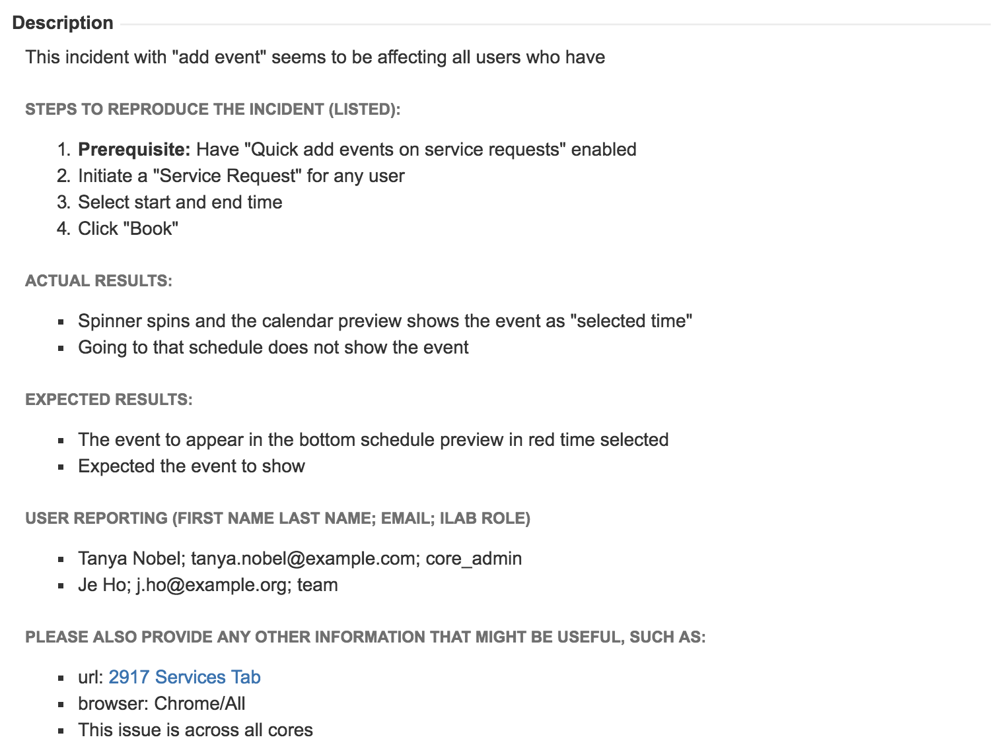

Fill out each field in the form including the priority.
How do I add an incident or bug issue?
To add bug tasks and receive notifications from JIRA you must have an account so please create your JIRA accounts! https://ilabdev.atlassian.net/
Click on the Open the Bug Form button
The Summary is the title.
Please fill out all questions in the description field.
Do not forget to include images or videos (you can save videos to google+ here).
Do not forget to update the priority.
It is very important that you select Urgent for urgent bugs or tasks.
If someone else needs to be added as a watcher please indicate that in the description.
Once the bug is submitted, Priority should only be updated by Product Management and Engineering Management.
Tracking Bugs and Bug Resolution
How do I track bugs?
You will be added as a reporter to any bug you report. Please remain logged into JIRA for this to happen automatically.
You will receive updates when the JIRA issue is updated.
Many factors are considered by Product Development when prioritizing an issue.
Use Search for Issues to create a filter to track all bugs that need your attention.
If an issue needs assistance from the reporter, another iLab team member or a third party it will be marked as On Hold with a comment as to what is needed to continue resolving the issue.
What is the bug resolutions workflow?
If the issue is changed to CLOSED & LIVE, you may want to check it yourself. If this incident has been resolved by Engineering adequately, please move the issue to LIVE & CONFIRMED. .
Every issue goes through QA.
If an issue is WAITING and you are the assignee, please complete the task or follow-up with the reporter for help.
Example 1

This defect has a small intro description. It also has a prerequisite to
setup the functionality required for the main action.